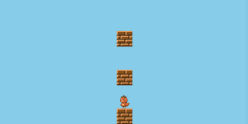

Table of contents

上方向だけすり抜ける床
- ジャンプゲームなどでは、上方向にすり抜け下方向にはすり抜けない床がよくあります。
- 今回は基本的なジャンプ処理とともに、phina.jsを使って自分なりに実装してみました。
動作サンプル
まずは以下のサンプルを確認して下さい。 画面タッチでキャラがジャンプしますが、上方向にはブロックをすり抜けて、その後に下のブロックに着地します。
プレイヤーとブロックの作成
プレイヤーとブロックは、それぞれSpriteクラスを継承して作成しました。
// プレイヤークラス
phina.define('Player', {
superClass: 'Sprite',
// コンストラクタ
init: function() {
// 親クラス初期化
this.superInit('tomapiko', SPRITE_SIZE, SPRITE_SIZE);
// フレームアニメーションをアタッチ
this.anim = FrameAnimation('tomapiko_ss').attachTo(this);
// スプライトシートのサイズにフィットさせない
this.anim.fit = false;
// 縦移動速度
this.vy = 0;
// サイズ変更
this.setSize(CHARA_SIZE, CHARA_SIZE);
},
- デフォルトのスプライトサイズから半分のサイズにしています。
- FrameAnimationクラスのプロパティfitをfalseにしないと、スプライトシートに書いている切り出しサイズが適用されるので注意して下さい。
// ブロッククラス
phina.define('Block', {
superClass: 'Sprite',
// コンストラクタ
init: function() {
// 親クラス初期化
this.superInit('tiles', SPRITE_SIZE, SPRITE_SIZE);
// タイルセットの指定フレームを表示
this.setFrameIndex(4);
// サイズ変更
this.setSize(CHARA_SIZE, CHARA_SIZE);
},
});
アセットで読み込んだタイルセットからブロックの画像のインデックスをsetFrameIndexで指定しています。
プレイヤーとブロックの配置
// グループ
var blockGroup = DisplayElement().addChildTo(this);
var gx = this.gridX;
var gy = this.gridY;
// プレイヤー
var player = Player().addChildTo(this);
player.setPosition(gx.center(), gy.span(12.5));
player.state = 'FALLING';
// ブロック
[5, 10, 15].each(function(i) {
var block = Block().addChildTo(blockGroup);
block.setPosition(gx.center(), gy.span(i));
});
- プレイヤーとブロックの配置には、Gridを利用しています。
- 今回はプレイヤーの状態毎に処理を分けるようにしており、管理用の変数stateを用意しました。
プレイヤーの状態毎に処理を分ける
毎フレーム更新されるupdate関数内でプレイヤーの状態毎に処置を分けるアプローチをとり、プレイヤーの状態を以下の３つに分類しました。
- ブロックの上にいるON_BLOCK
- ジャンプ中であるJUMPING
- 落下中であるFALLING
当たり判定の場合、上方向にはすり抜けるのでJUMPINGの時は当たり判定を行わず、残りの状態で当たり判定を行えばよいということになります。
// 毎フレーム更新処理
update: function(app) {
var player = this.player;
var state = this.player.state;
var p = app.pointer;
// プレイヤーの状態で分ける
switch (state) {
// ブロックの上
case 'ON_BLOCK':
// タッチ開始
if (p.getPointingStart()) {
player.vy = -JUMP_POWER;
player.state = 'JUMPING';
// アニメーション変更
player.anim.gotoAndPlay('fly');
}
// 縦あたり判定
this.collisionY();
break;
// 上にジャンプ中
case 'JUMPING':
player.moveY();
// 下に落下開始
if (player.vy > 0) {
player.state = 'FALLING';
}
break;
// 下に落下中
case 'FALLING':
player.moveY();
this.collisionY();
break;
}
- update関数の引数appのプロパティpointerから、タッチの状態を取得します。
- ブロックに乗っている時はジャンプできるので、タッチされた場合、上方向へ移動量を設定してプレイヤーの状態をJUMPINGに変更します。併せて、当たり判定を行います。
- ジャンプ中の時は、縦方向移動処理を行い、縦方向の移動の向きが下になった場合プレイヤーの状態をFALLINGに変更します。
- 落下中の時は、縦方向移動処理と当たり判定を行っています。
当たり判定
当たり判定を行うcollisionYという関数を用意しました。
// 縦方向の当たり判定
collisionY: function() {
var player = this.player;
// 床に乗っている場合は強引に当た(り判定を作る
var vy = player.vy === 0 ? 4: player.vy;
// 当たり判定用の矩形
var rect = Rect(player.left, player.top + vy, player.width, player.height);
var result = false;
// ブロックグループをループ
this.blockGroup.children.some(function(block) {
// ブロックとのあたり判定
if (Collision.testRectRect(rect, block)) {
// 移動量
player.vy = 0;
// 位置調整
player.bottom = block.top;
//
player.state = 'ON_BLOCK';
// アニメーション変更
player.anim.gotoAndPlay('stand');
result = true;
return true;
}
});
// 当たり判定なし
if (!true) player.state = 'FALLING';
},
- 最初にプレイヤーの縦方向の速度を調べます。0の時にも無理やり速度を与えているのは、ブロックの上に乗っている時でも当たり判定を生じさせることで、位置調整した時にキャラが宙に浮いて上下にブレるのを防ぐためです。
- 次に、当たり判定用の矩形を作成しています。プレイヤーの位置から速度分ずらした位置で当たり判定を行うことで、着地時にプレイヤーがブロックにめり込むのを防ぐことができます。
- ブロックをループして当たり判定を行い、ヒットしたらプレイヤーの状態をON_BLOCKに変更してループを抜けます。ループにはsomeを使っていますが、もちろん通常のforループでも構いません。
- 当たり判定がなければ落下中ということになるので、プレイヤーの状態をFALLINGとします。
まとめ
今回のアプローチはあくまでも自己流です。他に効率的な処理があるかもしれませんが、今回のコードをベースにすれば簡単なジャンプゲームが作れるのではないかと思います。